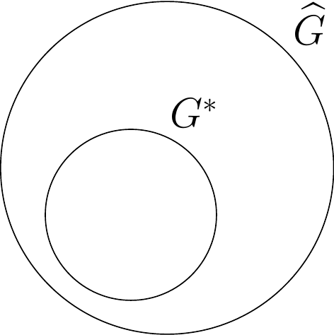
Model selection for Markov random fields on graphs under a mixing condition
XVII CLAPEM
Magno Severino
2026-03-06
Agenda
Motivation
Mathematical Framework
Estimation Method and Theoretical Results
Applications to real data
Conclusion and Future Work
Vector-Valued Stochastic Processes
\bf X^{(i)} = \big(X_1^{(i)}, X_2^{(i)}, \dots, X_d^{(i)}\big).
X_v^{(i)} \in A, A a finite alphabet, for v \in \{1,2,\dots,d\}.
Process \bf X = \{X^{(i)}: -\infty<i<\infty\}.
We assume the process \bf X has an underlying graph G^* = (V, E^*).
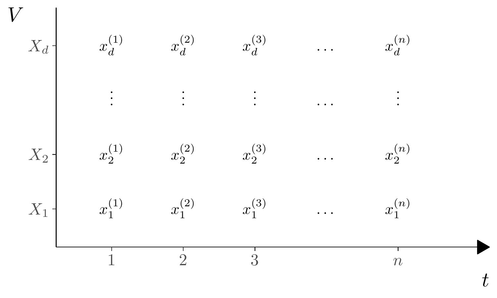
Vector-Valued Stochastic Processes
\bf X^{(i)} = \big(X_1^{(i)}, X_2^{(i)}, \dots, X_d^{(i)}\big).
X_v^{(i)} \in A, A a finite alphabet, for v \in \{1,2,\dots,d\}.
Process \bf X = \{X^{(i)}: -\infty<i<\infty\}.
We assume the process \bf X has an underlying graph G^* = (V, E^*).
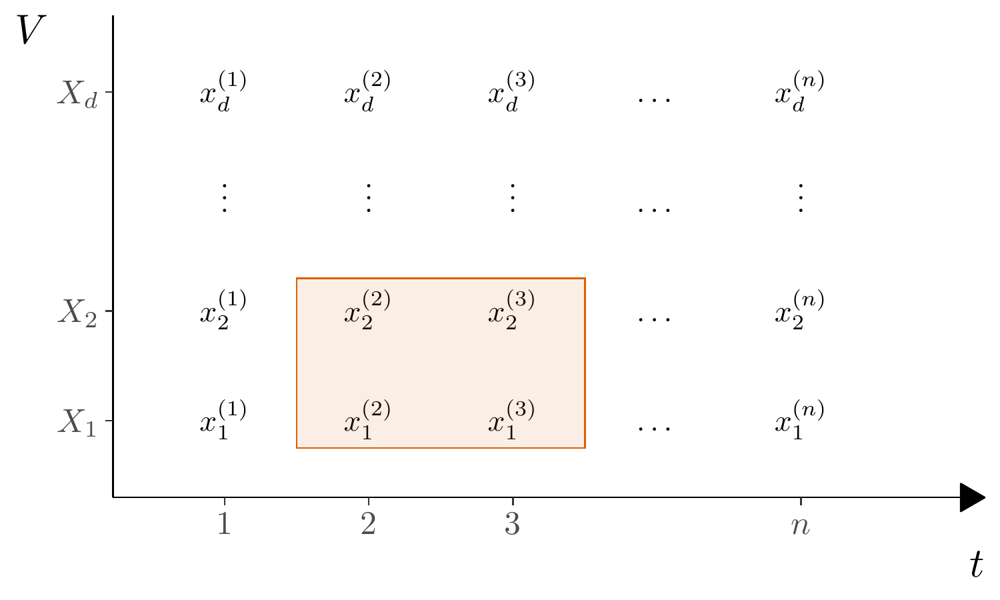
The IID case
Classic Problem: In the IID scenario, we have the standard model selection problem for discrete graphical models or Markov random fields.
Established Literature: Extensive research exists for this setting, including works by Lauritzen (1996), Koller and Friedman (2009), and Leonardi et al. (2024).
Common Approaches:
- Structure Estimation: Addressed via standard logistic regression (for binary models), distance-based methods, or penalized pseudo-likelihood.
- Neighborhood-Based Estimation: Many methods involve estimating individual neighborhoods for each vertex and then combining them to form the final graph.
Why go beyond the IID assumption?
Most traditional graphical model techniques assume that observations \mathbf{X}^{(1)}, \mathbf{X}^{(2)}, \dots are Independent and Identically Distributed (IID).
However, in real-world scenarios, the independence assumption is often too restrictive:
- EEG Time Series: Neural dependencies evolve over time.
- River Stream Flow: Successive observations exhibit hydrological dependence.
- Financial Markets: Daily indices show significant autocorrelation and mixing properties.
Our Proposal: A global model selection criterion that ensures consistency even under polynomial mixing conditions.
Objectives of the research
Proposal: Method to estimate the graph of conditional dependencies for multivariate stochastic processes with mixing conditions.
Aim: combine and generalize previous works,
Leonardi et al. (2021): method assumes decomposition into subvectors with immediate neighbor dependencies,
Leonardi et al. (2023): estimator of neighborhood of each vertex for iid data.
Proposed solution: penalized pseudo-likelihood criterion for entire graph estimation for multivariate processes with mixing conditions.
Key advantages:
- Handles non-iid data (mixing condition),
- Provides a global estimation approach.
Mixing Condition
- Let X^{(i:j)} denote the sequence of vectors X^{(i)}, X^{(i+1)}, \ldots, X^{(j)}.
The process satisfies a mixing condition with rate \psi(\ell) if the dependence between the past (X^{(1:m)}) and the future (X^{(n:n+k-1)}) decays as the distance \ell=n-m increases:
\Bigl| \mathbb P (X_{future} | X_{past}) - \mathbb P (X_{future}) \Bigr| \leq \psi(n-m) \mathbb P(X_{future}) \tag{1}
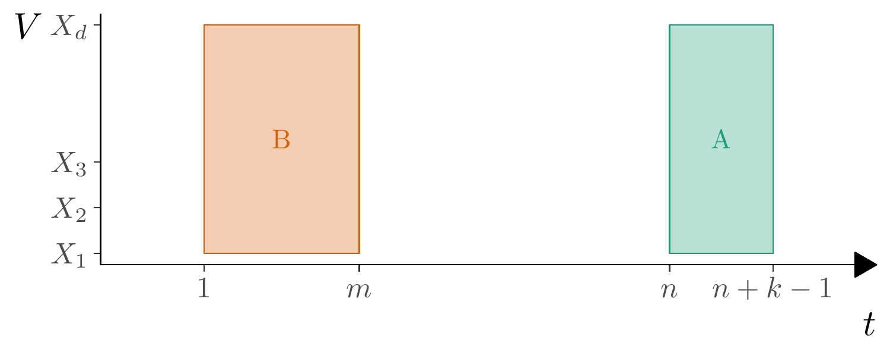
Empirical Probabilities
The stationary distribution of the process \pi is unknown, we must estimate it from the data.
Assume we observe a sample of size n of the process, denoted by \{x^{(i)}\colon i=1,\dots,n\}. Then, for any W\subset V and any a_W\in A^{W}, \begin{equation*} \widehat{\pi}(a_W) = \frac{N(a_W)}{n}. \end{equation*}
If \:\widehat\pi(a_W)>0, \begin{equation*} \widehat\pi(a_{W'}|a_{W}) = \frac{\widehat\pi(a_{W'\cup W})}{\widehat\pi(a_{W})}\,, \end{equation*} for two disjoint subsets W,W'\subset V and configurations a_W\in A^W, a_{W'}\in A^{W'}.
Empirical Probabilities
Given a graph G=(V,E), define G(v) = \big\{u \in V: (u,v) \in E \big\}, for v \in V, the set of neighbors of v in graph G.
Then we can compute \begin{equation*} \widehat\pi(a_v|a_{G(v)}) = \frac{\widehat\pi(a_{\{v\}\cup G(v)})}{\widehat\pi(a_{G(v)})}. \end{equation*}
Graph Estimator
Given any graph G and a sample of the process, we define the pseudo-likelihood function by \widehat L(G) \;=\; \prod_{i=1}^n \:\prod_{v \in V} \widehat\pi(x^{(i)}_v | x^{(i)}_{G(v)})\,. \tag{2}
Applying the logarithm we can write expression above as \log \widehat L(G) = \sum_{v \in V} \sum_{(a_v\in A)} \sum_{a_{G(v)}\in A^{|G(v)|}} N(a_v,a_{G(v)})\log \widehat\pi(a_v|a_{G(v)}) \tag{3}
The regularized graph estimator is given by
\widehat G = \underset{G}{\arg\max}\Big\{\log \widehat L(G) - \lambda_n \sum_{v \in V} |A|^{|G(v)|}\Big\} \,.
Consistency Theorem
Theorem 10: Assume the process \{X^{(i)}: i \in \mathbb{Z}\} satisfies the mixing condition presented before with \psi(\ell) = O(1/\ell^{1+\epsilon}) for some \epsilon>0. Then, by taking \lambda_n = c \log n, we have that \begin{equation*}
\widehat G = \underset{G}{\arg\max}\Big\{\log \widehat L(G) - \lambda_n \sum_{v \in V} |A|^{|G(v)|}\Big\}
\end{equation*} satisfies \widehat G=G^* eventually almost surely as n\to \infty.
Intuitive Overview of Theorem Proof
Consider \{\widehat G\neq G^*\} = \big\{G^* \subsetneq \widehat G \big\} \cup \big\{G^* \not\subset \widehat G \big\}.
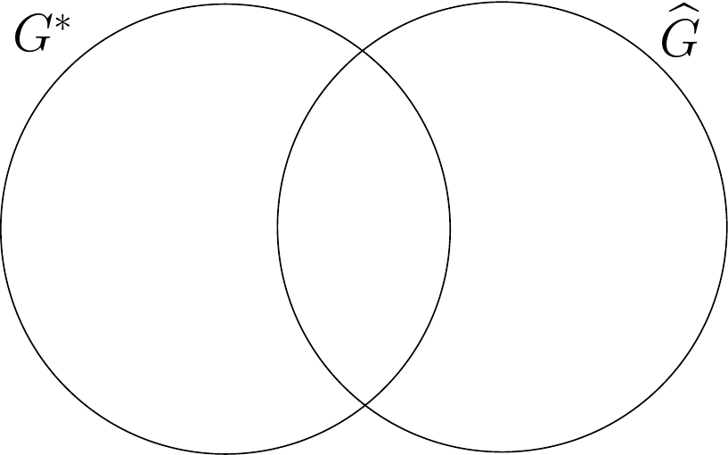
We prove that, eventually almost surely as n\to\infty, neither of the cases above can happen, which implies that \widehat G = G^*.
Algorithms for estimation
The objective is to find the optimal graph by maximizing the regularized log-pseudo-likelihood function:
H(G) = \log \widehat L(G) - \lambda_n \sum_{v \in V} |A|^{|G(v)|}.
Implemented Search Strategies
- Exact Algorithm: Performs an exhaustive search over the set of all possible simple graphs \mathcal{G}Computational complexity: 2^{d(d-1)/2}.
- Stepwise (Forward/Backward): Heuristic approach that adds or removes edges based on local improvements of H(G).
- Simulated Annealing: A stochastic global search metaheuristic used to approximate the estimator in high-dimensional spaces.

Comprehensive tools for estimating the graph \hat{G}, executing search algorithms, and ensuring reproducible results.
Application to real data
São Francisco River Data
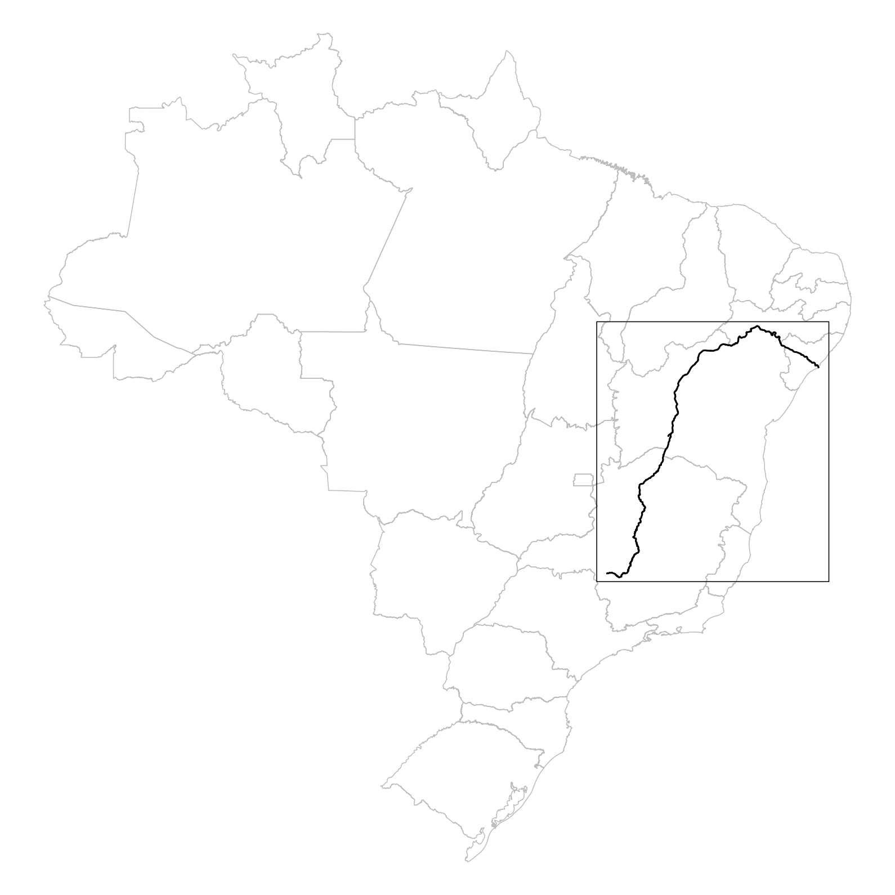
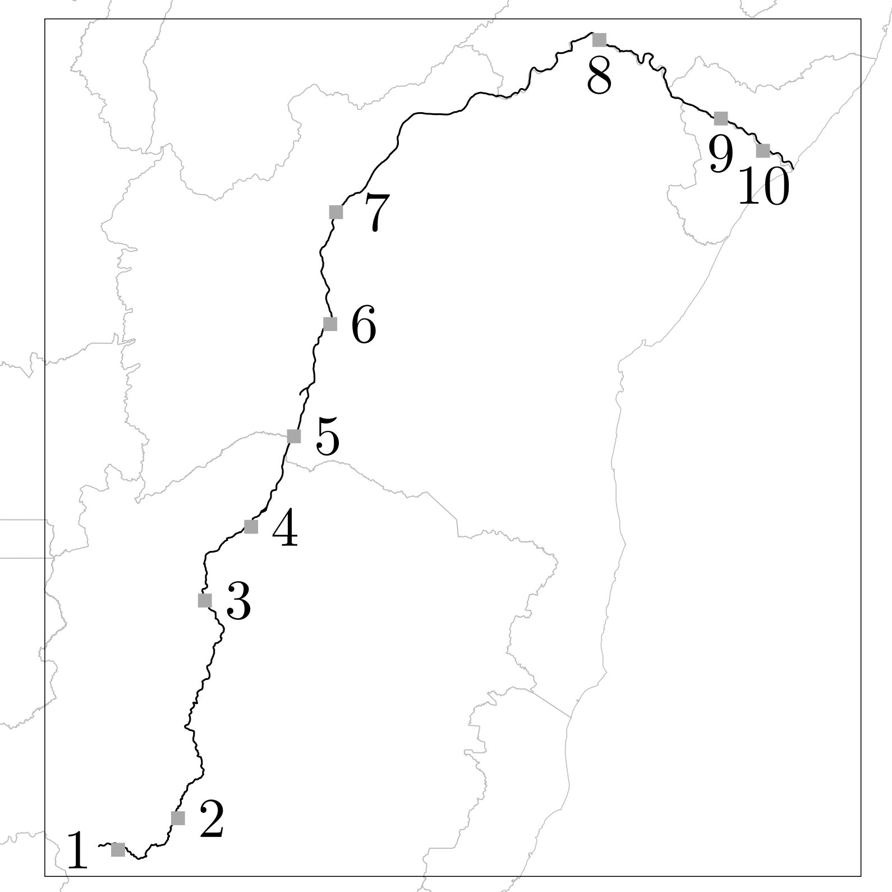
São Francisco River Data
Water volume measured at d stations along the river’s course.
Stations denoted as X_{u}, where u = 1, \ldots, d.
Vector \mathbf{X} observed at discrete time intervals (10-day mean).
Each observation denoted as \mathbf{X}^{(i)}= (X_{1}^{(i)}, \ldots, X_{d}^{(i)}).
Process \mathbf{X}^n=\{\mathbf{X}^{(i)}: 1 \leq i \leq n\}.
São Francisco River Data
Data avaiability: daily measurements from October 1st, 1924, to February 28th, 2019.
Data considered: from January 1977 to December 2016.
Total of 1042 observations.
Discretizetion of the data into five levels based on quantiles.
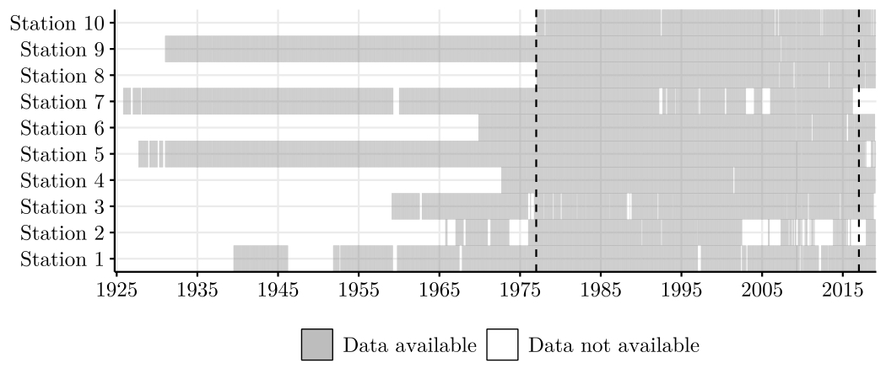
São Francisco River: Structural Results
We applied the Forward Stepwise Algorithm with 5-fold cross-validation to select the optimal penalty c.
Physical Network
Estimated Graph \widehat{G}
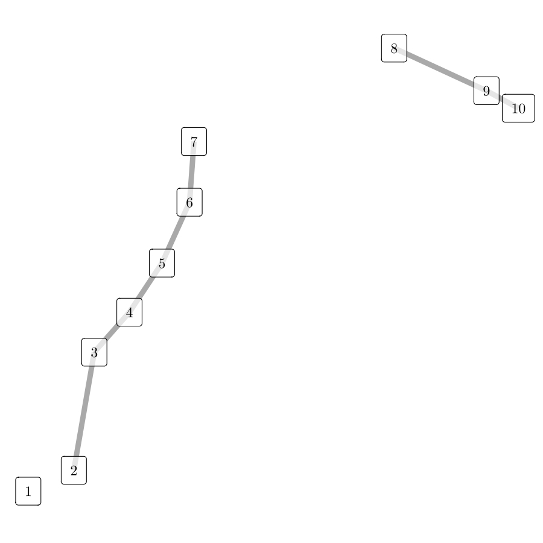
- The estimated edges accurately recover the hydrological flow and physical connectivity of the river.
- Results are consistent with independent block identification methods (Leonardi et al, 2021).
Stock Exchange Data
Relation between stock exchanges’ performance reflect global market interconnectedness and economic trends.
Impacts investment strategies, risk assessment, and portfolio diversification.
Challenge: Variations in stock exchange operating hours due to different time zones.
Complex analysis required to account for global market fluctuations.
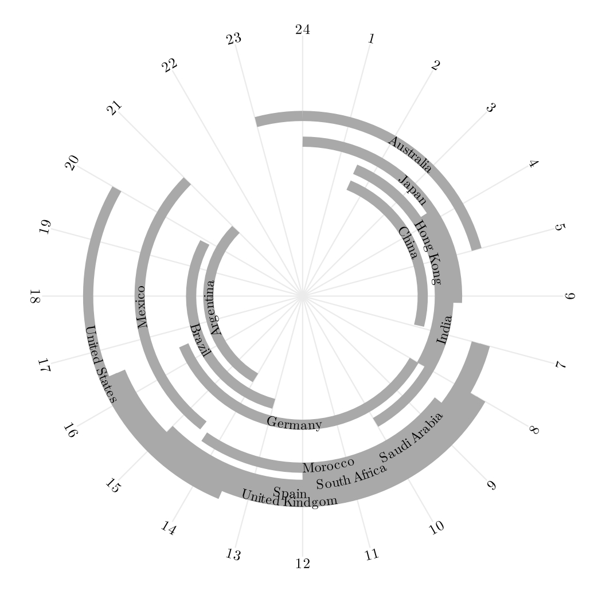
Stock Exchange Data
Objective: analyse the Relation between stock exchanges’ performance.
Discretization: daily indicator of an increase in the index rate.
Data from May 18th, 2010 to September 20th, 2023.
Adjustments made to address missing data and holiday schedules.
Final dataset comprises 2{,}654 rows for analysis.
Forward stepwise algorithm and a 5-fold cross-validation approach.
Stock Exchange Data
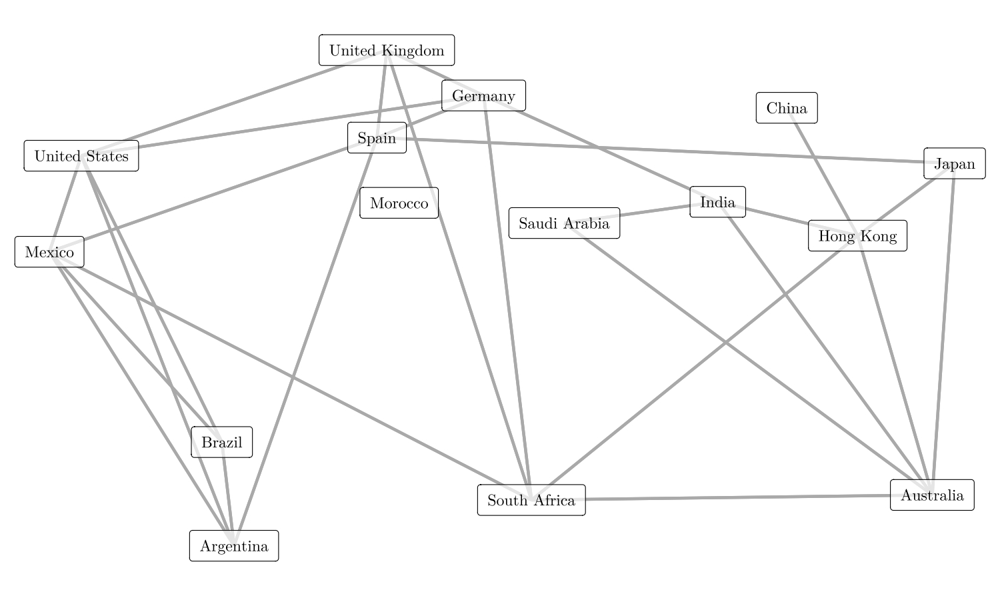
Estimated graph, considering the penalizing constant value chosen by cross-validation.
Discussion & Future Work
- Summary:
- Generalization of structure recovery for multivariate processes under polynomial mixing conditions.
- Development of a global estimation criterion based on penalized log-pseudo-likelihood.
- Proved strong consistency and derived convergence rates for the estimator \widehat{G}.
- Implementation of exhaustive and heuristic search algorithms (Stepwise, Simulated Annealing).
- Validation through extensive simulations and applications to hydrological and financial data.
- Future Directions:
- Generalization to infinite vertex sets and unbounded degree estimators.
- Extension to continuous-valued multivariate stochastic processes.
- Adaptation of the framework for directed graph estimation (causality).
References
Cerqueira et al.(2017) Andressa Cerqueira, Daniel Fraiman, Claudia D. Vargas and Florencia Leonardi. A test of hypotheses for random graph distributions built from eeg data. IEEE Transactions on Network Science and Engineering.
Galves et al.(2015) Antonio Galves, Enza Orlandi and Daniel Y. Takahashi. Identifying interacting pairs of sites in Ising models on a countable set. Braz. J. Probab. Stat..
Lauritzen(1996) Steffen L Lauritzen. Graphical models, volume 17. Clarendon Press.
Leonardi et al.(2021) Florencia Leonardi, Matías Lopez-Rosenfeld, Daniela Rodriguez, Magno TF Severino and Mariela Sued. Independent block identification in multivariate time series. Journal of Time Series Analysis.
Leonardi et al.(2023) Florencia Leonardi, Rodrigo Carvalho and Iara Frondana. Structure recovery for partially observed discrete markov random fields on graphs under not necessarily positive distributions. Scandinavian Journal of Statistics.
Meinshausen and Bühlmann(2006) N. Meinshausen and P. Bühlmann. Highdimensional graphs and variable selection with the lasso. Ann. Statist..
Ravikumar et al.(2010) Pradeep Ravikumar, Martin J. Wainwright and John D. Lafferty. High-dimensional Ising model selection using l1-regularized logistic regression. Ann. Statist..
¡Gracias!
Obrigado!
Thank you!
magnotfs@insper.edu.br
magnotairone.github.io